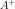
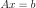
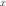
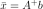
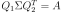
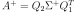
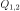
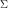
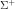

numpy.linalg.pinv¶
-
numpy.linalg.pinv(a, rcond=1e-15, hermitian=False)[source]¶ Compute the (Moore-Penrose) pseudo-inverse of a matrix.
Calculate the generalized inverse of a matrix using its singular-value decomposition (SVD) and including all large singular values.
Changed in version 1.14: Can now operate on stacks of matrices
- Parameters
- a(…, M, N) array_like
Matrix or stack of matrices to be pseudo-inverted.
- rcond(…) array_like of float
Cutoff for small singular values. Singular values less than or equal to
rcond * largest_singular_valueare set to zero. Broadcasts against the stack of matrices.- hermitianbool, optional
If True, a is assumed to be Hermitian (symmetric if real-valued), enabling a more efficient method for finding singular values. Defaults to False.
New in version 1.17.0.
- Returns
- B(…, N, M) ndarray
The pseudo-inverse of a. If a is a matrix instance, then so is B.
- Raises
- LinAlgError
If the SVD computation does not converge.
Notes
The pseudo-inverse of a matrix A, denoted , is defined as: “the matrix that ‘solves’ [the least-squares problem] ,” i.e., if  is said solution, then is that matrix such that .
It can be shown that if  is the singular value decomposition of A, then , where  are orthogonal matrices,  is a diagonal matrix consisting of A’s so-called singular values, (followed, typically, by zeros), and then  is simply the diagonal matrix consisting of the reciprocals of A’s singular values (again, followed by zeros). [1]
References
- 1
G. Strang, Linear Algebra and Its Applications, 2nd Ed., Orlando, FL, Academic Press, Inc., 1980, pp. 139-142.
Examples
The following example checks that
a * a+ * a == aanda+ * a * a+ == a+:>>> a = np.random.randn(9, 6) >>> B = np.linalg.pinv(a) >>> np.allclose(a, np.dot(a, np.dot(B, a))) True >>> np.allclose(B, np.dot(B, np.dot(a, B))) True